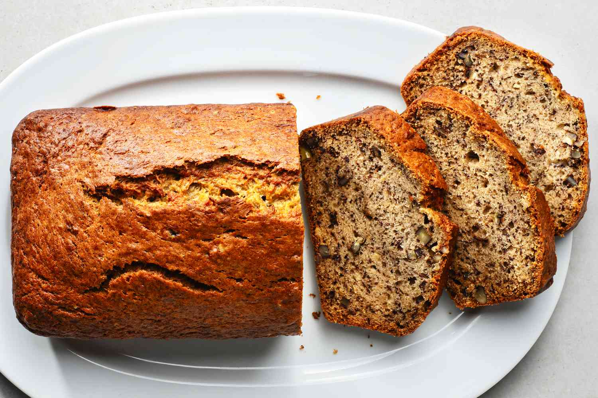

Odin Recipes
Index
Banana Bread
Spicy Tofu
Vegtable Lazagne
Clam Chowder
Banana Bread

Ingredients
2 to 3 medium (7" to 7-7/8" long) very ripe bananas, peeled (about 1 1/4 to 1 1/2 cups mashed)
1/3 cup (76g) butter, unsalted or salted, melted
1/2 teaspoon baking soda
1 pinch salt
3/4 cup (150g) sugar (1/2 cup if you would like it less sweet, 1 cup if more sweet)
1 large egg, beaten
1 1/2 cups (205g) all-purpose flour
Steps
- Preheat the oven to 350°F (175°C), and butter an 8 x 4-inch loaf pan.
- In a mixing bowl, mash the ripe bananas with a fork until completely smooth. Stir the melted butter into the mashed bananas.
- Mix in the baking soda and salt. Stir in the sugar, beaten egg, and vanilla extract. Mix in the flour.
- Pour the batter into your prepared loaf pan.
- Bake for 55 to 65 minutes at 350°F (175°C), or until a toothpick or wooden skewer inserted into the center comes out clean